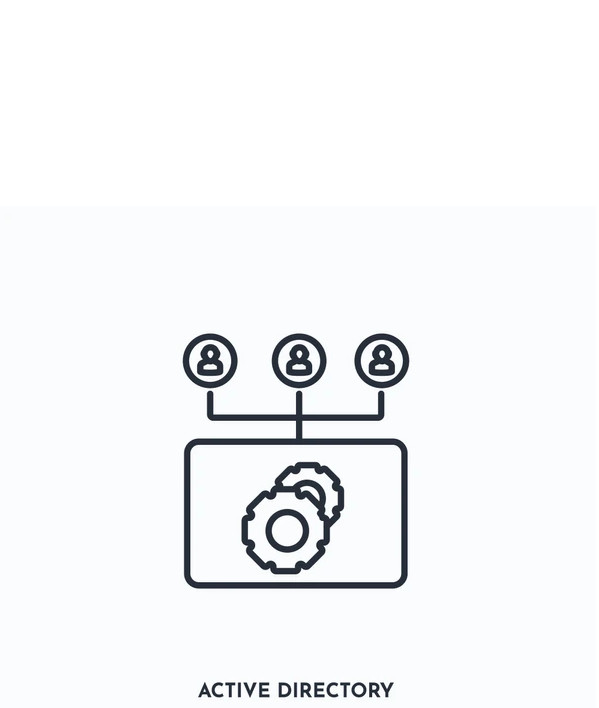

Hey there, Earthlings! I’m
Starfire
, your friendly Cybersec Student ! I explore the intricate universe of Active Directory with unmatched skill.
Here is everything I have online
.
Active Directory
Understanding Active Directory: Key Concepts and Terminology.
Visit

Kerberos & NTLM
Kerberos & NTLM Authentication.
Visit